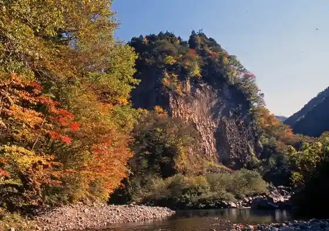
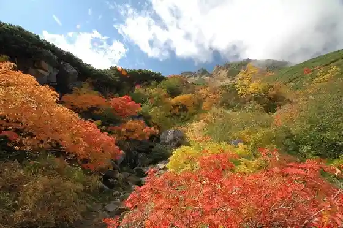
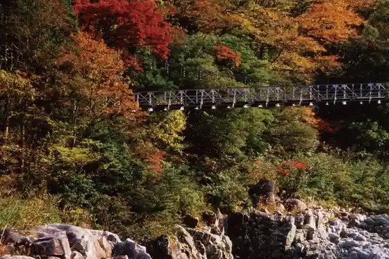
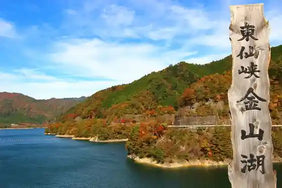

Gan Ritsu Kyo no Autumn Leaves
Gero, Gifu · 0576-62-2570 · Official / source link

Ontake Pa no Rama Line no Autumn Leaves
Gero, Gifu · 0576-25-4711 · Official / source link

Gero Onsen Gassho Village no Autumn Leaves
Gero, Gifu · 0576-25-2239 · Official / source link
Nakayama Shichiri no Autumn Leaves
Gero, Gifu · 0576-25-4711 · Official / source link

Iwaya Dam no Autumn Leaves
Gero, Gifu · 0576-25-4711 · Official / source link

Gero Hatsu Onsen Museum
Gero, Gifu · 0576-25-3400 · Official / source link
Gero Onsen Ideyu Asa City
Gero, Gifu · 0576-24-1000 · Official / source link
Hida Kawa Onsen Shimizu Baths
Gero, Gifu · 0576-56-4326 · Official / source link
Gero Onsen
Gero, Gifu · 0576-24-1000 · Official / source link
Kosaka no Taki Meguri
Gero, Gifu · 0576-62-2215 · Official / source link
Daku Kawa Onsen
Gero, Gifu · 0576-24-2222 · Official / source link
Ontake Yama
Gero, Gifu · 0576-24-2222 · Official / source link
Minami Hida Kenko Dojo
Gero, Gifu · 0576-55-0010 · Official / source link
Zen Masa Tera
Gero, Gifu · 0576-52-1353 · Official / source link
Gero Onsen Gassho Village
Gero, Gifu · 0576-25-2239 · Official / source link
Nawashiro Sakura
Gero, Gifu · 0576-25-4711 · Official / source link
Roadside Station Hida Kanayama Nuku Mori no Sato Onsen
Gero, Gifu · 0576-32-4855 · Official / source link
Tochimoto Farm Furutsutomato Kari
Gero, Gifu · 0576-26-2763 · Official / source link
Roadside Station Maze Bi Teru Village
Gero, Gifu · 0576-47-2133 · Official / source link
Roadside Station Minami Hida Kosaka Hanamomo
Gero, Gifu · 0576-62-1010 · Official / source link
G- Ranchi &G- Gurume
Gero, Gifu · 0576-25-5522 · Official / source link
Yuya Onsen
Gero, Gifu · 0576-25-4711 · Official / source link
Gan Ritsu Kyo Himeshaga Baths
Gero, Gifu · 0576-62-3434 · Official / source link
Butai Toge Kanko Farm Zu
Gero, Gifu · 0576-26-2115 · Official / source link
Jofuku Tera no Shidare Zakura Yujo Sakura
Gero, Gifu · 0576-25-4711 · Official / source link
Gero Ekishuhen Cherry Blossoms
Gero, Gifu · 0576-25-4711 · Official / source link
Kanayama Kyoseki Gun Hikari no Experience Tour
Gero, Gifu · 0576-32-3544/0576-20-4118 · Official / source link
Tama Ryu Tera
Gero, Gifu · 0576-32-2361 · Official / source link
Furusato Rekishi Memorial Museum
Gero, Gifu · 0576-25-4174 · Official / source link
Kosaka Na Fuyu no Taki Meguri
Gero, Gifu · 0576-62-2215 · Official / source link
Hakun Za Kabuki
Gero, Gifu · 090-4799-1951 · Official / source link
Hida Kaido Tenryo Asa City
Gero, Gifu · 0576-52-2500 · Official / source link
Tenryo Shuzo (Kabu)
Gero, Gifu · 0576-52-1515 · Official / source link
Aga Taira Sambirejji
Gero, Gifu · 0576-24-1050 · Official / source link
Iwataro no Shidare Sakura / Hagiwara Sakura Meguri
Gero, Gifu · 0576-25-4711 · Official / source link
Ei Yo Tera no Shidare Sakura Hagiwara Sakura Meguri
Gero, Gifu · 0576-25-4711 · Official / source link
Yasaka Kohan Sakura
Gero, Gifu · 0576-25-4711 · Official / source link
Miyatani Cherry Blossoms / Hagiwara Sakura Meguri
Gero, Gifu · 0576-25-4711 · Official / source link
Moriyama Shrine no Shidare Sakura / Hagiwara Sakura Meguri
Gero, Gifu · 0576-25-4711 · Official / source link
Hida Kawa Park Cherry Blossoms / Hagiwara Sakura Meguri
Gero, Gifu · 0576-25-4711 · Official / source link
Fukuro Saka Toge Cherry Blossoms (Gaku Ken Sakura)
Gero, Gifu · 0576-25-4711 · Official / source link
Mon Kazusa Kawa (Kadowasagawa) no Hotaru
Gero, Gifu · 0576-25-4711 · Official / source link
Sugata Kawa (Sugatagawa) no Hotaru
Gero, Gifu · 0576-25-4711 · Official / source link
Suimei Kan (Tachi Yori Yu)
Gero, Gifu · 0576-25-2801 · Official / source link
Bo Kawa Kan (Tachi Yori Yu)
Gero, Gifu · 0576-25-2048 · Official / source link
Mizu Otori Sono (Tachi Yori Yu)
Gero, Gifu · 0576-25-2288 · Official / source link
Daku Kawa Onsen Shiei Rotemburo
Gero, Gifu · 0576-62-3373 · Official / source link
Hida Kaido Kinkotsu Meguri
Gero, Gifu · 0576-32-3544 · Official / source link
Funsen Ike
Gero, Gifu · Official / source link
Okuhida Shuzo (Kabu)
Gero, Gifu · 0576-32-2033 · Official / source link
Zen Masa Tera Yukari no Ume
Gero, Gifu · 0576-52-1353 · Official / source link
Ko Ko no Kobai
Gero, Gifu · 0576-62-2570 · Official / source link
Marukari no Riku Nogawa
Gero, Gifu · 090-2688-2084 · Official / source link
no Hohon Park Hidaosaka (Hida Kosaka Fureai Forest)
Gero, Gifu · 070-2321-5941 · Official / source link
Ro Tani Forest Kawa no Hotori no Campground
Gero, Gifu · Official / source link
Hida Kosaka Nakagawara Campground
Gero, Gifu · Official / source link
Kaoreoto Campground
Gero, Gifu · Official / source link
Maze Kawa Village Suzushi no
Gero, Gifu · 090-6585-38540576-47-2516 · Official / source link
Ofunato Sakura Namiki
Gero, Gifu · Official / source link
Mori Mizunashi Hachiman Shrine
Gero, Gifu · Official / source link
Chofuku Tera
Gero, Gifu · 0576-32-2310 · Official / source link
Onsen Tera
Gero, Gifu · 0576-25-2465 · Official / source link
Gero Koryu Hall
Gero, Gifu · 0576-25-5000 · Official / source link
Sakura Hora Shiro
Gero, Gifu · Official / source link
Mauntenraifu Hida
Gero, Gifu · 050-3695-1609 · Official / source link